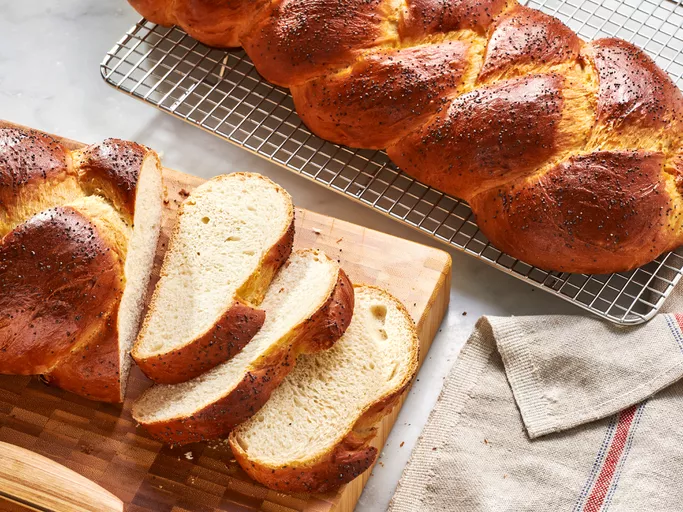

challah

The One&Only Challah
A mix of everyones recipes gained over the years.
Makes 4 Small challot, or 2 medium.
Ingredients
- 1 1/4 Cup Warm water
- 1 x Sachet yeast
- 1/2 Cup Sugar
- 1 1/2 Tsp salt
- 1/4 Cup oil
- 1 x egg
- 4 Cups flour
Steps
- Mix water, sugar & yeast in a bowl, Leave to rise for a few minutes
- Slowly add egg, oil & salt
- Add flour, one cup at a time depending on consistency
- Add more flour if needed, until dough has a sprin back
- Cover with wet towel and leave to rise
Once risen make the blessing and take off a piece of challah - approx 30g - burn it on its own in the oven
- Braid challah
- Leave to rise a few more minutes
- Bake for 25 minutes, until golden brown